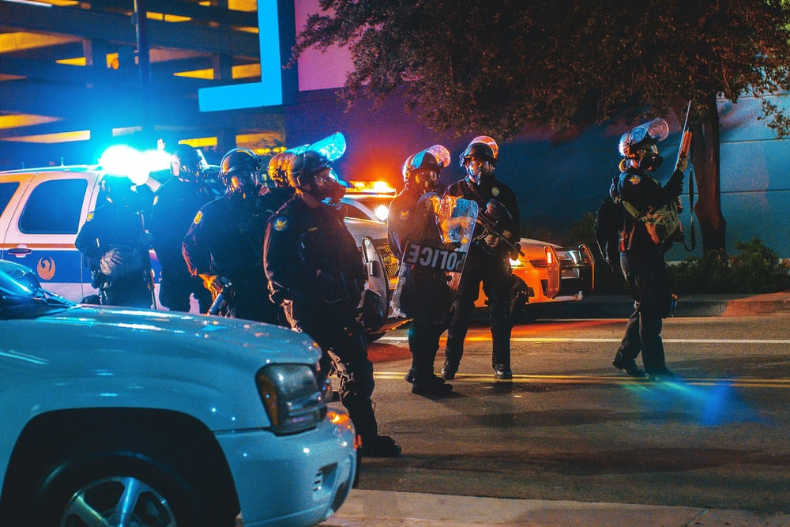
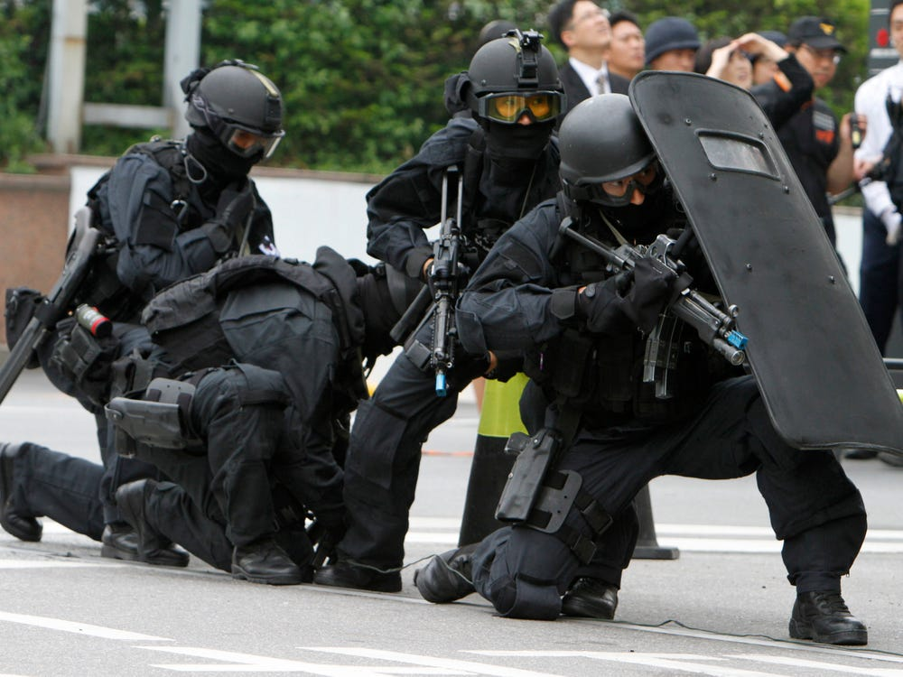

- riot police
- security patrol
- rapid reaction team
- kim-jinwoo
- choi-seongho
- seon-junghoon
- oh-gyotaek
Auxilary Police is a kind of alternative military service in korea.
Auxilary Police organization consists of 3 different divisions.
Riot Police, Security Patrol and rapid react force.
asdasdasfsdfsfs

